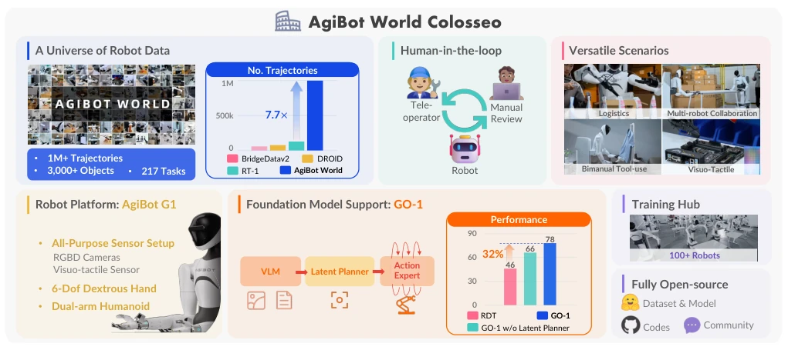
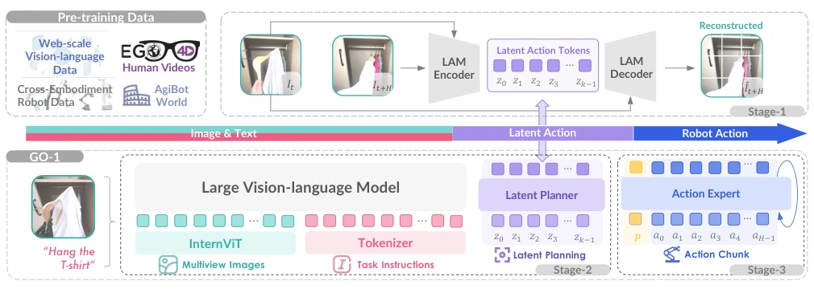
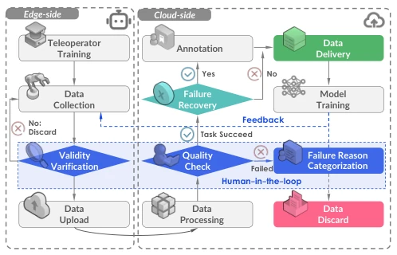
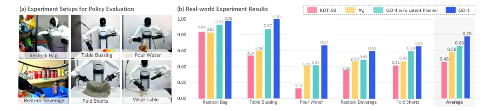
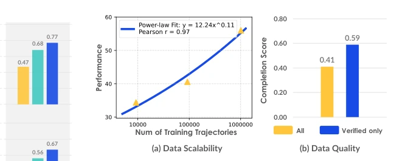
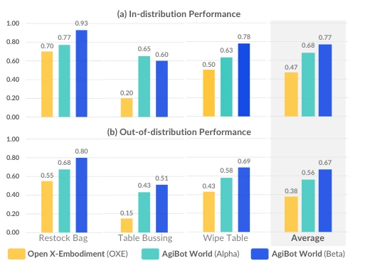

AgiBot World Colosseo: A Large-Scale Manipulation Platform for Scalable and Intelligent Embodied Systems
AgiBot-World-Contributors, Qingwen Bu, Jisong Cai, Li Chen, X. Cui, Yan Ding abspdf
论文点评Review
AgiBot World Colosseo 试图用“堆料”解决具身智能的数据饥渴问题，100 台机器人、100 万条轨迹确实令人咋舌，但这也意味着极高的硬件门槛，普通实验室难以复现。GO-1 模型引入潜在动作（Latent Action）来打通网页视频与机器人控制，思路虽新，但缺乏仿真环境支持，导致迭代成本高昂，实为“重工业”式研究。虽然数据质量通过人工闭环显著提升，但开源协议限制商业使用，社区生态构建仍任重道远。这不仅是数据集，更是一次对“数据即智能”的豪赌，成功与否取决于后续能否真正降低使用门槛，否则可能沦为少数巨头的玩具。
AgiBot World Colosseo attempts to address the data hunger of embodied intelligence by 'stacking hardware'. 100 robots and 1 million trajectories are indeed staggering, but this also implies extremely high hardware thresholds, making reproduction difficult for ordinary laboratories. The GO-1 model introduces Latent Action to bridge web videos and robot control; while the approach is novel, the lack of simulation environment support leads to high iteration costs, constituting 'heavy industry' style research. Although data quality is significantly improved through human-in-the-loop, open-source agreements restrict commercial use, and building a community ecosystem remains a long journey. This is not merely a dataset, but a gamble on 'data is intelligence'; success or failure depends on whether usage barriers can be truly lowered subsequently, otherwise it may become a toy for a few giants.
研究动机Motivation
具身智能的核心瓶颈在于高质量数据匮乏。现有工作如 Open X-Embodiment [6] 虽聚合了多源数据，但存在硬件异构、观察视角不一致及质量参差不齐的问题，限制了策略泛化能力。DROID [7] 尝试众包数据，却缺乏质量保障且依赖固定单臂硬件，难以捕捉真实世界的复杂交互。此外，多数数据集局限于实验室短 horizon 任务，缺乏长程规划与灵巧操作能力。因此，亟需构建一个标准化、高保真、涵盖多场景与长程任务的真实世界平台，以支撑可扩展的通用机器人策略学习，填补从受控环境到真实世界的鸿沟。
The core bottleneck of embodied intelligence lies in the scarcity of high-quality data. Existing works such as Open X-Embodiment [6] aggregate multi-source data but suffer from hardware heterogeneity, inconsistent observation perspectives, and uneven quality, limiting policy generalization capabilities. DROID [7] attempts crowdsourced data but lacks quality assurance and relies on fixed single-arm hardware, making it difficult to capture complex interactions in the real world. Furthermore, most datasets are limited to laboratory short-horizon tasks, lacking long-horizon planning and dexterity capabilities. Therefore, there is an urgent need to construct a standardized, high-fidelity, real-world platform covering multiple scenarios and long-horizon tasks to support scalable general-purpose robot policy learning, bridging the gap from controlled environments to the real world.

Fig. 1: Introducing AgiBot World Colosseo, an open-sourced large-scale manipulation platform comprising data, models, benchmarks and ecosystem. AgiBot World stands out for its unparalleled scale and diversity compared to prior counterparts. A suite of 100 dual-arm humanoid robots is deployed. We further propose a generalist policy (GO-1) with the latent action planner. It is trained across diverse data corpus with a scalable performance of 32% gain compared to prior arts.

Fig. 4: We propose GO-1, a generalist policy featuring general reasoning and long-horizon planning capabilities. The latent action model (LAM) learns universal action representations from web-scale video data (i.e., human videos from Ego4D), and quantizes them into discrete latent action tokens. The latent planner conducts temporal reasoning through latent action prediction, bridging the gap between image-text inputs and robot actions generated by the action expert.
The platform adopts a 'Data + Model' dual-wheel drive. On the data side, a Human-in-the-loop collection process is established, including feasibility verification, formal collection, cloud quality inspection, and failure recovery data annotation, ensuring high-quality and diverse data. On the model side, GO-1 is proposed, based on the ViLLA framework and trained in three stages: the first stage uses LAM to learn latent action representations from web videos, decoupling vision and action; the second stage uses VLM as a backbone, performing long-horizon temporal reasoning via a latent action planner; the third stage introduces diffusion policy as an action expert to generate high-frequency low-level control signals. This architecture bridges general vision-language models and specific robot actions through discrete latent tokens, achieving transfer from web knowledge to embodied decision-making, effectively improving long-horizon task execution capabilities.

Fig. 2: Data collection pipeline. We embrace a human-in- the-loop framework to ensure high quality, enriched with detailed annotations and error recovery behaviors. Human feedback plays a critical role not only in post-collection re- view but also in actively guiding the data collection process, which is largely overlooked in prior efforts.

Fig. 5: Is GO-1 a more powerful robot generalist policy? We evaluate GO-1 against previous generalist policy RDT-1B and our baseline without the latent planner, with all policies pre-trained on AgiBot World beta. Across all tasks and comparisons, GO-1 outperforms baselines by a large margin. The incorporation of latent planner boosts performance on complex tasks such as “Fold Shorts” and improves generalizability in task “Restock Beverage” in great extent.
The dataset covers 5 major scenarios, 217 tasks, 3000+ objects, with over 1 million trajectories. Evaluation is conducted in the real world, with baselines including OXE [6] pre-trained policy and RDT [10]. Results show that the AgiBot World pre-trained policy achieves an average performance improvement of 30% in both in-distribution and out-of-distribution scenarios, outperforming RDT by 32%. Ablation experiments indicate that data scale and performance exhibit a power-law scaling relationship, and human-verified data improves policy completion rates more than raw data. After introducing the latent planner, GO-1 performs significantly better than the no-planner baseline on complex tasks such as 'folding shorts', verifying the effectiveness of long-horizon planning and demonstrating the key role of high-quality data in policy generalization.

Fig. 7: Further analysis on: a) how model performance scales with data size, and b) the impact of filtering undesir- able data through manual review on policy learning.

Fig. 6: Does AgiBot World dataset improve policy per- formance and generalizability? Policies pre-trained on our dataset outperform those trained on OXE in both seen (0.77 v.s. 0.47) and out-of-distribution scenarios (0.67 v.s. 0.38).